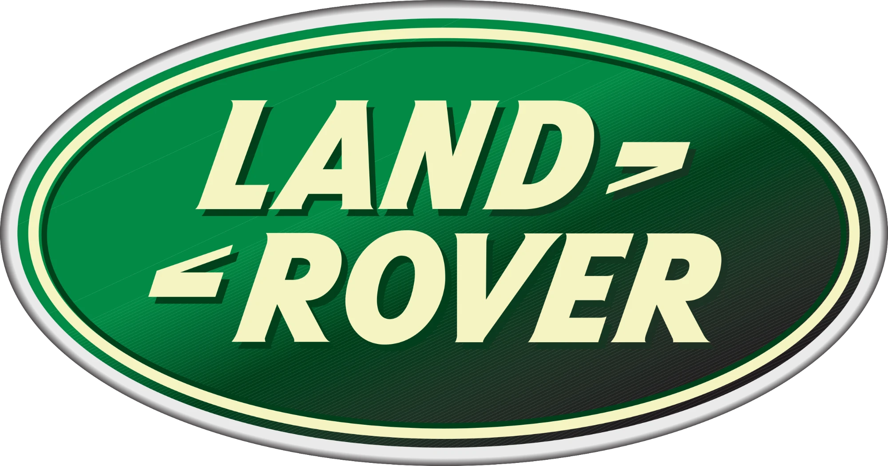
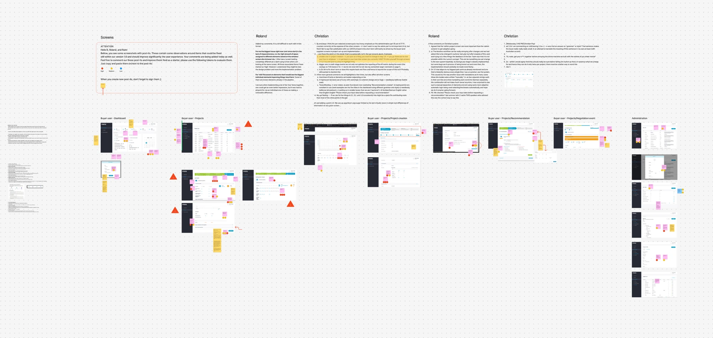
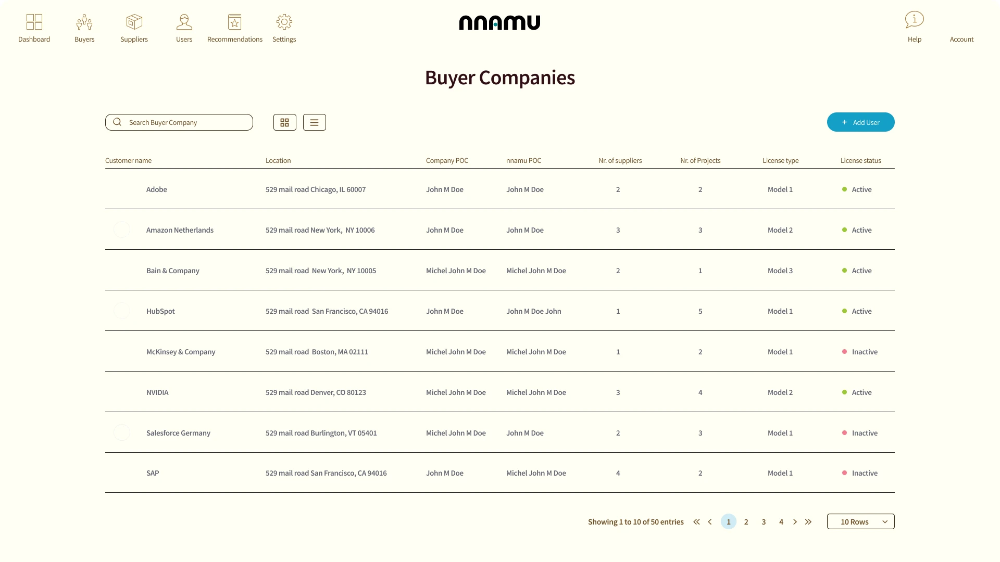
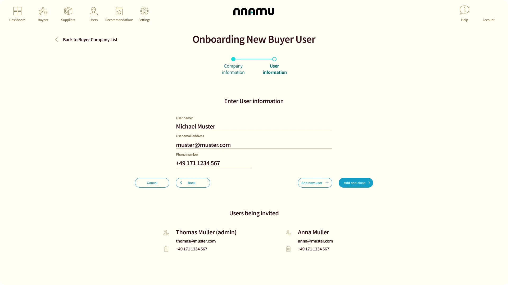
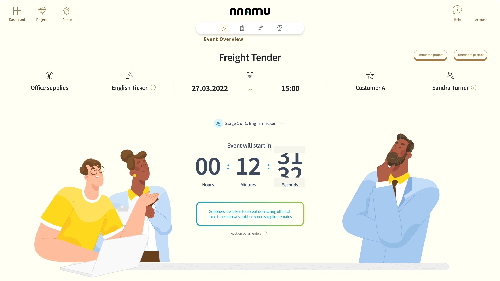
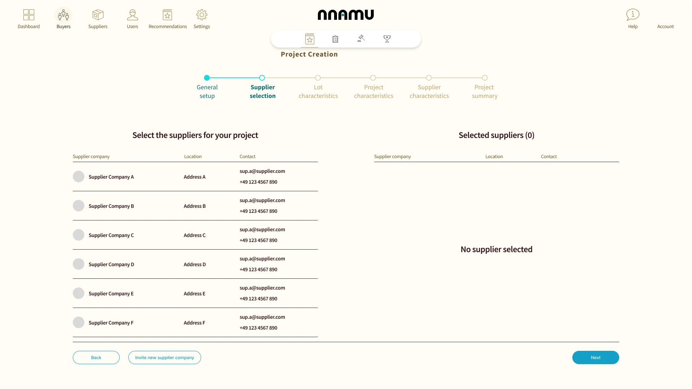
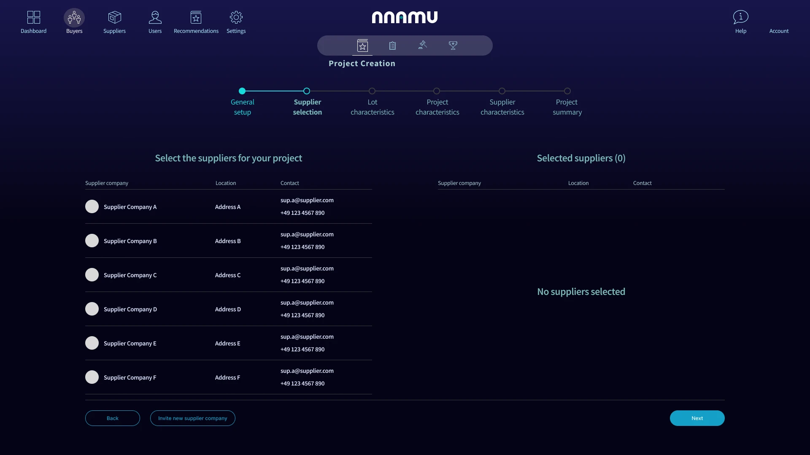
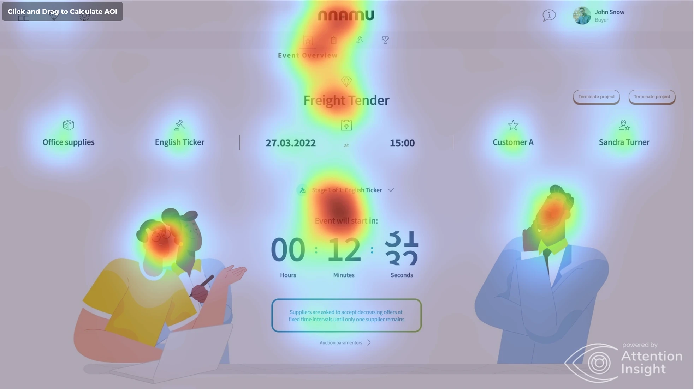

nnamu Negotiation
Negotiate procurement contracts with unmatched savings with the power of Game Theory and AI

Project overview
Timeframe
06 months
My role
- Full-stack design director
Tasks
- Create a user-centric culture in the design, development and management teams
- Build an engaging and scalable design system
- Promote an AI-facilitated product experience
- Leverage AI in every design process
Challenge
nnamu faced the challenge that all digital services startups do at some point: to transform a demostrator into a real product. In a very short time, it needed to take the lessons and built requirements from its prototype phase and transform the initial experience and technical solutions into a MVP.
Early adopters

Research
Learning from past effort
A lot of my time was dedicated to extracting feedback and commentary on the existing design solutions for nnamu Negotiations, with the mind of not only finding the pain points to be solved, but also identifying opportunities for the new gamification and little delights in the user experience.

Preparing for
AI assistance
Design
A big part of our thinking was how different types of AI assistance would come into play. We wanted to make the design system feel more human and bring a sense of ease to a data-heavy business. To do that, we worked on everything from the color scheme to creating AI personas that could represent different perspectives and help us better understand users’ needs.
Build AI-assisted design methods into the process
We leveraged multiple AI tools for content generation and design evaluation, speeding up the design exploration phase while reducing its costs.





